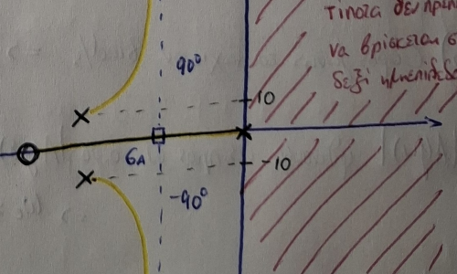
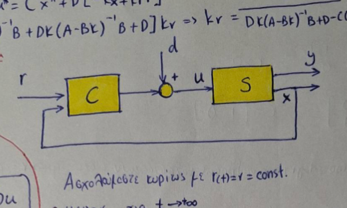

My Notes
Handwritten notes regarding various subjects of the Electrical and Computer Engineering (ECE) curriculum at the Aristotle University of Thessaloniki (AUTH).
Συστήματα Αυτομάτου Ελέγχου 1
Περιέχει λυμένες ασκήσεις επιλογής ελεγκτή και μια γενική επανάληψη εφ'όλης της ύλης. Υστερεί σε διαγράμματα φάσης.
Download PDF

Συστήματα Αυτομάτου Ελέγχου 2
Mini guide για ΣΑΕ 2 με όλες τις σημαντικές έννοιες σε μορφή παραδειγμάτων.
Download PDF
